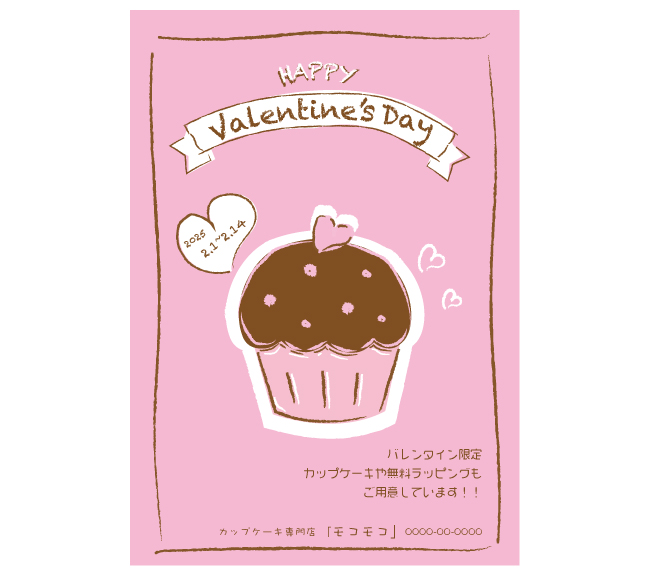

カップケーキ専門店・DMハガキ
【概要】
架空のカップケーキ専門店「モコモコ」のバレンタインフェアのDMハガキを制作しました。
【目的】
バレンタインフェアを開催することを伝え、集客数を増やす。特にリピーター客の獲得を目指す。
【ターゲット】
10代女性（中高生）
【デザイン】
親しみを感じるよう中高生がノートの隅などに描く絵をイメージして、手描き風のイラストにしました。
使用する色を3色に限定する事で、雑多な印象になりそうなデザインでも、まとまりがある印象になるよう工夫をしました。
【制作期間】
1日
【使用ツール】
Illustrator